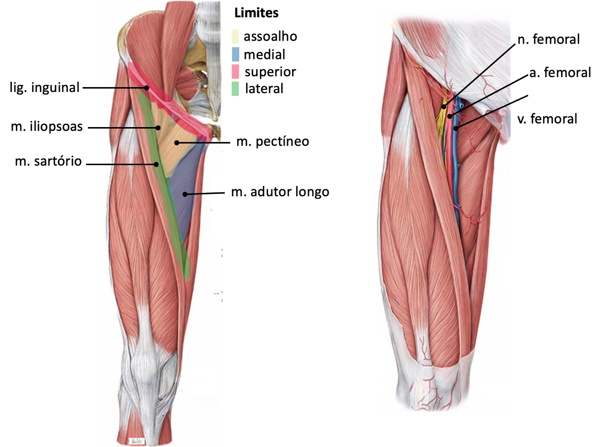

Limite proximal: ligamento inguinal (formado pelo m. oblíquo externo do abdome).
Limite lateral: margem medial do m. sartório.
Limite medial: m. adutor longo.
Assoalho: m. psoas maior (receber a cabeça do fêmur) e m. pectíneo.
Teto: fáscia lata.
Conteúdo
Podemos localizar de lateral para medial, no trígono femoral, as estruturas anatômicas:
Nervo femoral (originado de L2-L4), inerva os músculos do compartimento anterior da coxa.
Artéria femoral (continuidade da a. ilíaca externa, denominada femoral após atravessar o ligamento inguinal). No trígono femoral origina a artéria femoral profunda.
Veia femoral (origina-se quando a veia poplítea atravessa o canal adutor), a veia femoral, após atravessar profundamente o lig. inguinal passa a ser denominada veia ilíaca externa.
Linfonodos inguinais profundos e o ramo femoral do nervo genitofemoral estão no trígono femoral.
Estruturas anatômicas superficiais
A fáscia lata, na região proximal do trígono femoral torna-se mais delgada, formando uma prega denominada hiato safeno. Desta forma, veias tributárias da veia femoral atravessam a fáscia.
As estruturas anatômicas superficiais do trígono femoral são as veias tributárias da veia femoral:
veia safena magna
veias pudendas externas
veia circunflexa superficial do ílio
veia epigástrica superficial
Ramos cutâneos femorais anteriores (provenientes do n. femoral) são encontrados na região superficial ao trígono femoral.

SCHUENKE M. et al. Atlas of Anatomy. Thieme, NY, 2010.